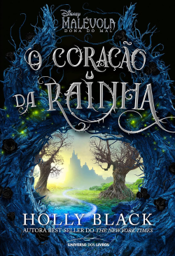
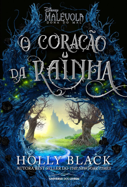

Título: O Príncipe Cruel
Autora: Holly Black
Ano de lançamento: 2018
Número de páginas: 322
Editora: Galera
Classificação Indicativa: 14 anos
Há dez anos atrás, Jude Duarte e suas irmãs viram seus pais serem assassinados e foram levadas para o Reino das Fadas pelo homem que hoje chamam de pai. Agora, com dezessete anos, Jude tenta ser aceita pelos outros feéricos e ser a primeira mortal a se tornar uma cavaleira do Grande Rei, mas o príncipe Cardan Greenbriar e suas turma vão fazer de tudo para impedir ela disso.
O Príncipe Cruel é dividido em duas partes. A primeira parte (que é quase dois terços do livro) achei chata, quase que eu desisti de ler, então o final do último capítulo da primeira parte me fez ficar animada para continuar. Adorei a segunda parte! Foi um plost twist atrás do outro que me deu vontade de ler o próximo.
Achei o universo de Príncipe Cruel interessante e meio confuso, algumas partes fiquei sem entender direito sobre quem era rei, rainha ou lorde do que. Achei a escrita muito boa e envolvente sendo narrado pela Jude. Gostei bastante dos personagens, mas acabei pegando um pouquinho de raiva da Taryn, a irmã de Jude, e Locke, um amigo de Cardan, que achei meio suspeito desde o começo.

06/10
O Príncipe Cruel é o primeiro livro da trilogia O Povo do Ar.
.png)


Tendo um conto extra, O Rei de Elfhame.

E um livro spin-off, O Herdeiro Roubado.


.png)
Holly Black é cocriadora das Crônicas de Spiderwick e ganhou um Newberry Honor pelo romance Boneca de Ossos. Consagrada autora de livros de fantasia para jovens, Holly também criou, com a amiga Cassandra Clare, a série litarária Magisterium. Ela vive na Nova Inglaterra (EUA) com o marido e o filho.
(publicados no Brasil)


 



Este livro contém:

Como uma boa leitora, ela não pode deixar de dar uma conferida em Povo do Ar, uma das sagas de fantasia mais famosas do mundo!
Além de resenhista da Leitura da Meia-Noite, Suzana também produz nosso design,
deixando seus textos e o de outros colaboradores do melhor jeito para vocês, leitores.
Clique aqui para saber mais sobre.